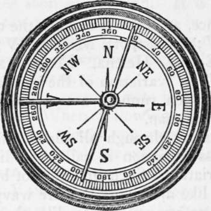
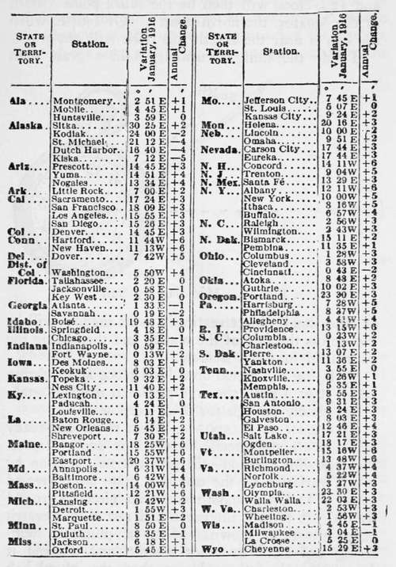
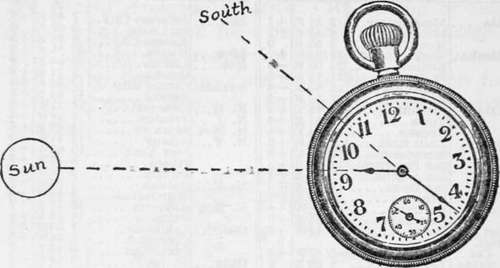
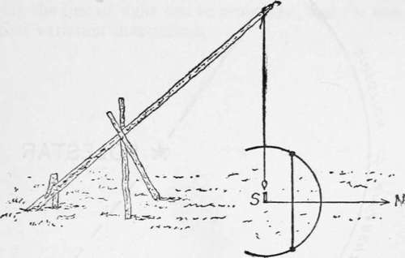
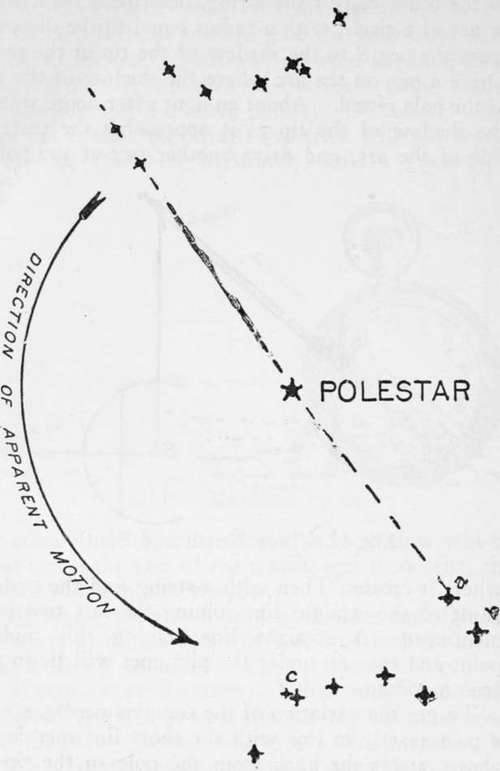

Blazes Survey Lines. Use Of The Compass. Part 5
Description
This section is from the book "Camping And Woodcraft", by Horace Kephart. Also available from Amazon: Camping and Woodcraft.
Blazes Survey Lines. Use Of The Compass. Part 5
For instance, at New York City the compass now points 1o°W; at Eastport, Me., 20°W; at Lincoln, Neb., 1o°E; at Helena, Mont., 20°E. This "declination" or "variation of the compass" must be allowed tor when running a true course, or when plotting one by map.
A line passing through all places that show the same compass variation is called a "line of equal magnetic variation." Such lines do not by any means run straight like meridians, but are wavy and looped and run off at strange angles, like the agonic line, though none of them correspond to its meanders; and they, too, shift slowly westward from year to year.
Now for the practical application. Suppose you are on the line of magnetic variation that runs through Ogden, Utah, where the declination is 18E. To find true north, you set your compass so that the needle points i8°E, as in Fig. 10. Then the N mark on the dial points due north.
To lay out a course by map; spread the sheet out flat and lay the compass on it with N-S line of dial exactly parallel with N-S line on map. Then revolve map until needle shows proper number of degrees allowance for local variation, if any. All meridians on the map will then be parallel with the lines they represent on the ground. Now you can take the bearings of your objective, and if the instrument has a movable course arrow (see Vol. I., p. 169) set it accordingly.
The following table of declinations, prepared by the U. S. Coast and Geodetic Survey, is copied from the World Almanac of 1916. By adding or subtracting, as the case may be, the "annual change" multiplied by the number of years after 1916, you will get a close approximation to the variation for a future date, although the annual change is not constant.
Fig. 10. Compass Variation.
Magnetic Declinations
Or Variations of Compass for January, 1916—With the Annual Change between 1910 and 1915 for the Principal Places in the United States.
A plus (-J-) sign to the annual change denotes that the declination is increasing, and a minus (—) sign the reverse.
Meridian By Watch
One's watch, if it be keeping correct time, and the sun is shining, can be used as a compass (Fig. n). The watch being set by local (sun) time, turn the face of the watch to the sun in such position that the hour-hand shali point to the sun. Half-way between the hour-hand and 12 o'clock will then be the south point (south of the equator, the north point). Of course, when the sun is near the zenith this trick will not work.
To do the thing accurately, hold a grass stem or other small object vertically so its shadow will be cast across the face of the watch, and then bring the hour-hand into this shadow.
Fig. 11. Meridian by Sun.
By laying the watch on a level place and sighting across it at a pole, the true meridian may be established closely enough for most purposes.
Meridian By Shadow
When rough-and-ready methods are not precise enough for one's purpose, the following method will give a true meridian by which variation of the compass may be corrected (Fig. 12) : On a smooth and level piece of ground lean a pole toward the north and rest it in a crotch or on shears as shown. Make a plummet with string and stone or other weight, and suspend it from the end of the pole so that the plumb-bob nearly touches the ground.
Drive a peg (S in the figure) directly under the plummet. Then, an hour or two before noon, attach a string to the peg and, with a sharpened stick tied to the other end of the string, describe a semicircle, or arc of a circle, with a radius equal to the distance from the peg S to the shadow of the tip of the pole. Drive a peg on the arc where the shadow of the tip of the pole rested. About an hour after noon, watch the shadow of the tip as it approaches the eastern side of the arc, and drive another peg at the point where it crosses. Then with a string find the middle point of the straight line joining the last two pegs mentioned. A straight line joining this middle point and the peg under the plummet will lie in the true meridian.
Fig. 12. True North and South.
To get the variation of the compass needle, set up a pole exactly in line with the short line mentioned above, and sight back from the pole to the tip of the slanting stick that holds the plummet. Make a note of the variation, so many degrees east or west, and use this when running a line by compass.
Meridian By Pole Star
Everybody knows the "Dipper" in the constellation of the Great Bear <Eig. 13). Its stars never set but revolve around star which is Polaris, the North or Pole Star.
Fig. 13. Position of Big Dipper above or below the Pole Star when the Pole Star is due North.
The North Star bears exactly due north only twice a day. It is always close enough to steer by, but if one wishes to correct his compass by it he must the North Star. The two stars forming the front of the Dipper's bowl (a and b in the figure), called the "pointers," point toward a conspicuously bright do so at a time when the double star in the middle of the Dipper's handle (c in the figure) is either directly above or directly below the North Star, for that is when the bearing is correct. At all other hours Polaris bears somewhat east or west of true north.
To find the true meridian: set up two poles ten or twelve feet apart and exactly in line with the North Star, at such time as mentioned above. The front pole should be illuminated by a lantern or candle so that correct sight can be taken. Next day the line of sight can be prolonged, and the compass variation determined.
Continue to:
- prev: Blazes Survey Lines. Use Of The Compass. Part 4
- Table of Contents
- next: Chapter VI. Route Sketching. Mapping. Measuring